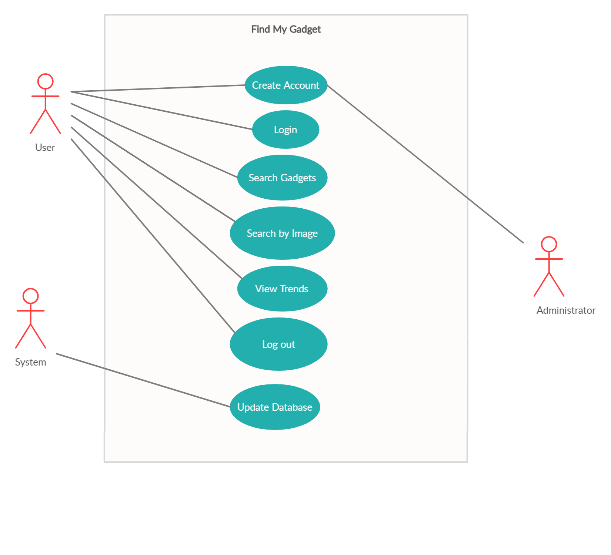

This document serves the purpose of providing a comprehensive overview of our software, 'Find My Gadget'. This includes describing the user interface, system's primary uses and software requirements, which will aid developers with a clarified understanding of our software architecture and implementations.
Every requirement statement is assumed to have its own priority. Bold texts are used to emphasize section and sub-section headings, and highlighted words are arranged in the glossary.
This document is prepared in a sequential order and is intended for software developers and designers, project managers, testers, as well as any individual user who needs to understand the basic system architecture and its specifications.
'Find My Gadget' is an online market-based product comparator that scraps electronic gadget models and provides optimized purchase solution for all the users and also generates a notion for trending gadgets to help its users reach out to trending products.
It is considered that the users are located in Bangladesh, and the features of the system are designed to be more appropriate to Bangladeshi netizens.
A distributed gadget database system stores the following information.
• To create a web scraper to crawl through and extract data relating to gadgets from websites.
• To log the findings in a database for further manipulation.
• To develop a web application to use as a front end and allow the user to operate the web scraper through an intuitive interface.
The deliverables for this project are:
• Web scraper
• Database
• Web application
• Android App
The major functions of the product are –
User classes are:
The software will have two platforms in which it will work, one is the website platform and the other is the android app platform.Distributed database in necessary.Datbase configuration is google firebase.n website platform it will be running with the combination of Python,Django,SQL. And on the android platform it will be running with the use of Java, PHP and Sql.
As this is a web scrapping basd online application so it mainly dependent on the websites access and there response.If for some reason the websites are down, we wont be able to update our database.Also,The data that has been extracted will first need to be treated so that they can be easily understood. In certain cases, this might take a long time and a lot of energy to complete.
The system is designed to be intuitive and user friendly. But if there are further queries, the user can go through the user manual and online video tutorials.
It is assumed that the software will work fine as long it is used on an android device or on a web browser.
As the software is dependent on scrapping other websites, so as long as other websites are working fine also the backend of the website are unchanged.
When the user search www.gmg.com the user will see an log in page. if the user doesn’t have an account then the actor
can simply press the create account option. System will response by giving a registration page. The actor provides Name, Email, password,
confirm password, phone number and address. By submitting this the information will be collected to
the server and system will take to the log in page. Actor can simply log in by giving email and password.
After logged in an actor can view a few the tending products on the home page. actor can search any product
which he wants to view with the best saving price and best offered. The system will fetch these searched products
information from various websites and comparing between passed products, the system will show the best saving products
on the screen.
The actor can view these products with prices, reviews, vendor and the saving that the actor will make
from this from other available websites products. Actor can select any of these by comparing the reviews, prices and other stuffs.
Then this will redirect the actor to the actual webpages on where the actor can view all other details about this product and can
buy if the actor wishes to buy this product by competing that web sites criteria. An actor can also view other tends by clicking
this from the home pages. All of this stuff will show the name of the product, images, reviews, vendor and the saving percentage
that the actor can make from this website. The actor can also choose from these viewed products and can buy the actors preferred product.
An actor can also search products by images and continue the tasks. After completing all the tasks, the user can log out from this server.
This will work from both web version and mobile application. On both version this will work same.
As this is about web version and mobile application. Neither the mobile application nor the web version has any special hardware requirements.
So, the system will not have any hardware interface.
Since the application must run over the internet, all the hardware shall require to connect internet will be hardware
interface for the system. As for e.g. Modem, WAN – LAN, Ethernet Cross-Cable and the desired design constraints should meet
into the functionality of hardware and software.
This software is web version and mobile application based. both of this version has to run from a web server and initial loading time depends on the internet speed which also depends on the device from which the product is run.
The android version of the mobile should be above version 6 and the browser should support at least 80% of HTML5.
The web development tools should conform either IBM's CUA standards or Microsoft's GUI standards.
There is no memory requirement from user end of this application..
There are many types of interfaces as such supported by the E-Store software system namely; User Interface, Software Interface and Hardware Interface. The protocol used shall be HTTP for the intranet communication will be through TCP/IP protocol suite. The Port number used will be 80. There shall be logical address of the system in IPv4 format.
| Actor Actions | System Response |
|---|---|
| 1. User goes to www.gmg.com | 2. System responds with a login page |
| 3. Actor press create account button | 4. System direct the actor to a sign up form |
| 5. Actor enters Name, email, password, confirm password, phone number and address 6. Actor select Submit button | 7. System verify actor credentials and redirect to the login page |
7.1. Any field left blank: system redirect to signup form with a message “All Field must be filled up”
7.2. Email not match with regex: system redirect to signup form with a message “ Please! Enter a valid email”
7.3. Password is less than 6 digits: System shows an error message “Password must have at least 6 digits” and redirect to signup page
7.4. Password and confirm password not match: System shows an error message “Password and confirm password did not match” and redirect to signup page
| Actor Actions | System Response |
|---|---|
| 1:System update timer initiates scraping, based on given function. | 2:System retrieves the new data and updates it into the database. |
1.1:Scraping fails to retieve data, system handles the error and keeps existing data.
| Actor Actions | System Response |
|---|---|
| 1:User accesses the home page. | 2:System redirects user to the home page, which contains the search box. |
| 3. User performs a search via the search box. | 4. System takes the input, fetches content and redirects user to a new page with product details. |
3.1 The search input field is empty, the system prevents the action.
3.3 Injection command is entered, system handles it safely via parameterized statement.
| Actor Actions | System Response |
|---|---|
| 1.User goes to www.gmg.com | 2.System responds with a login page |
| 3.Actor enters username & password and presses the login button | 4.System verify actor credentials and redirect to a intereactive homepage with a navigation menu |
| 5.Actor selects 'View Trends' from the naviagation MENU | 6.System responds with a page consists list of trending gadget |
| 7.Actor select one of the picture of gadget from that page | 8.System redirect to that particular website page from where the gadget data has been taken |
| 9.Actor select logout from the menu | 10.System log out the actor from the menu and redirect to the login page |
4.1 Credentials are wrong. System ask the actor to re-enter credentials
8.1 The redirected page is not available at tha moment.System shows an error meassage
Interface between the user and the software will have some resonable response time based on the internet connection.As, it will crawl real time information fron other webpages, a decent amount of response time is necessary for this product to process the information properly and in adequate manner.
The application will not affect data stored outside of its server nor will it affect any other web applications. It cannot cause any damage to the phone or its internal components. The only potential safety concern associated with this application applies to virtually all handset apps. This app should not be used while operating a vehicle or in any other situation where the user's attention must be focused elsewhere.
Only the administrator has the rights to manage any changes in the system. Only the administrator has the rights to manage any changes in the stored data set.Other than that,Workspace of the user should only be accessed through user own credentials and any other user should not be able to access to the user private data.Also,The Application shall not grant access to an unauthorized user and the Application shall not communicate with any other devices or servers while in use by the user.
Not applicable as the recommendation system is not doing any explicit business with any company or personnel at this moment.
All the data will be stored in a relational database.
| Term | Definition |
|---|---|
| Business Analyst(BA) | A person responsible for identifying the business needs of their clients and stakeholders, to determine solutions to business problems |
| Class Diagram | A type of static structure diagram that describes the structure of a system by showing the system's classes, their attributes, operations (or methods), and the relationships among the classes |
| Dependency | A reliance of some kind, of one set of components on another set of components, or one set of requirements or other artifacts on another set |
| Use Case | A sequence of transactions in a dialogue between an actor and a component or system with a tangible result, where an actor can be a user or anything that can exchange information with the system. |

N/A